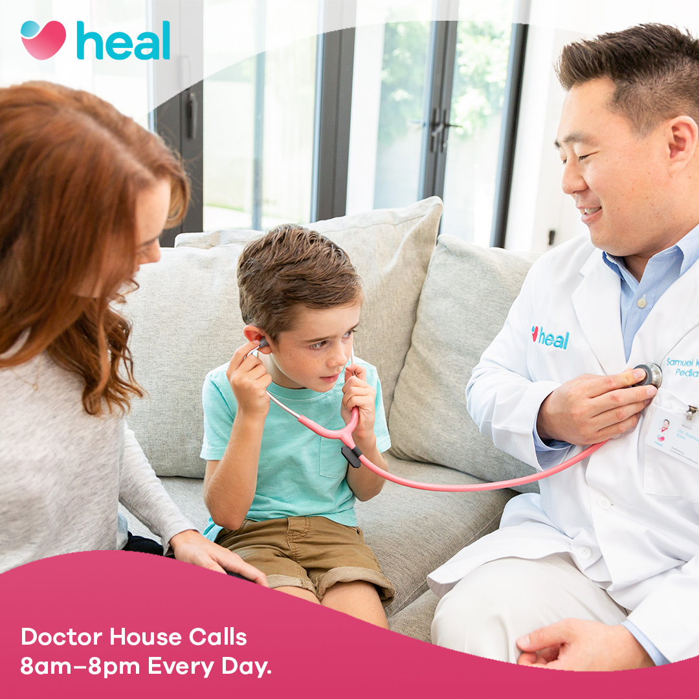

Create a set of Facebook advertisements to promote Heal's house call service using the provided images and messages.
The process for this client involved researching their existing visual styling, creating first iterations at 1080x1080, and then producing the 1200x628 alongside the final iterations of the 1080x1080 advertisements.
After reviewing the ad copy and images provided, I delved into their Facebook feed, Instagram feed, and their website to review the brand's visual styles in action.
Within their current styles, I noticed a continual use of a single hue background to highlight a subject and differenciate it from the background. Another element that contributed to their look and feel was the use of organic shapes to frame or direct the eye towards the subject. These two observations would be the cornerstones of my initial concepts.
After exploring potential layout styles via sketching, I created rough concept images to explore image framing and color pairing. For client review, I selected the three most distinct concepts to send to the head contractor for the meeting.
After review, two of the concepts were melded together for the refined concept variations. As with one of my variants, I created a gradient map color scheme that connects to a specific subject (for example, girl+mom uses a blue gradient map), while foreground shapes would link to the specific image across all copy variants.
The visual styling of the advertisements unified some of the visual styles of their website with their advertisements, but there was a concern that the mix of colors might bring attention away from the messaging. In creating the final version, I removed the gradient map to give the advertisement a more natural setting to pair with the messaging, while still keeping the pop of color and shape in the foreground.